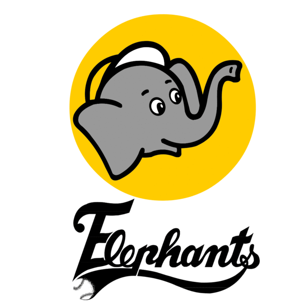
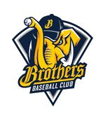

兄弟飯店棒球隊(1984.9-1990.3) -> 兄弟象隊(1990.3-2013.10) -> 中信兄弟隊(2013.12 - NOW)
1984年兄弟飯店棒球隊成立，最初是一隻乙組球隊，隔年很快地大敗省體(現台體大)成為第10支甲組球隊。隨後幾年在各甲組聯賽大殺四方、威風八面、勢如破竹、無人能敵、稱霸全國。在1990年，中華職棒成立，和味全、統一、三商一同成為創始隊伍。
24年以來，兄弟一舉拿下了7年的總冠軍，有前無古人的兩次三連霸，也有過7年的墊底戰績。但是他們總是能夠在蹲低後躍起，臨逆風高飛，瀕死而重生，不愧是我最敬仰的兄弟象隊。無論戰績如何，人氣始終維持在聯盟頂尖，令人不得不為之讚嘆、嘖嘖稱奇，這就是我們我象迷「不離不棄，是我兄弟」的壯志精神。2013年，兄弟球團宣布解散球隊，中華職棒正式剩下三個球隊，根本沒辦法比賽，正當大家喋喋不休討論明年會不會有中華職棒時，有一個集團宣布接手兄弟，拯救了台灣。
中信集團買下兄弟球團所屬的兄弟象隊，並改名為中信兄弟(沒有象)隊。從渺小的飯店企業直接躍升為豪門隊伍，球員都受到大幅加薪，使得原本有「中職毒瘤」、「職棒血汗工廠」、「薪水落後20年」一稱的兄弟象隊，在大眾面前的形象頓時翻轉，戰績更是扶搖而直上，原先令人詬病的得分能力也為之振奮起來，打出了「強攻」口號。究竟中信兄弟能走到哪一步呢～